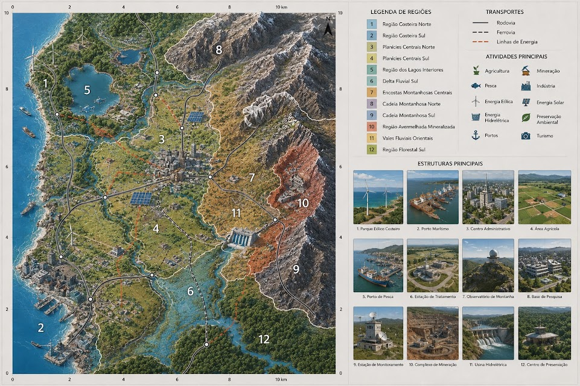

BEM-VINDO(A) DE VOLTA
Olá, morador!
Suas memórias ajudam a preservar a identidade
da nossa comunidade.
0
Memórias registradas
12
Regiões mapeadas
5000
Moradores na comunidade
Mapa das regiões
Selecione uma região para conhecer mais.

Uma comunidade é feita de histórias.
Compartilhe lembranças, fotografias e relatos
que merecem continuar vivos.
Últimas memórias
TERRITÓRIO E IDENTIDADE
Mapa da comunidade
Explore as regiões. Clique em uma área numerada
para visualizar suas informações.
Mapa ilustrado — 12 regiões
⌖ Clique em uma região do mapa para ver os detalhes.
DETALHES DO MAPA
⌖
Escolha uma região
Clique em uma área numerada do mapa
para descobrir as informações correspondentes.
REGISTRO COMUNITÁRIO
Registrar uma memória
Conte uma história ou compartilhe uma lembrança importante.
HISTÓRIAS COMPARTILHADAS
Arquivo comunitário
Consulte os relatos registrados pelos moradores.
PARTICIPAÇÃO
Conselho comunitário
Construindo a memória coletiva
Espaço para moradores valorizarem histórias locais,
sugerirem temas de pesquisa e contribuírem com a
preservação do patrimônio comunitário.
01 · Compartilhar histórias
02 · Identificar lugares importantes
03 · Preservar registros históricos
SEU PERFIL
Carteira do morador
M
Morador
Integrante da comunidade
Protótipo: seus dados ficam somente neste navegador.
Não utilize senhas reais ou informações sensíveis.